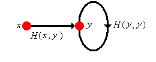
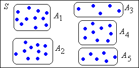
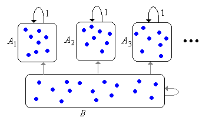

The study of discrete-time Markov chains, particularly the limiting behavior, depends critically on the random times between visits to a given state. The nature of these random times leads to a fundamental dichotomy of the states.
Basic Theory
As usual, our starting point is a probability space \( (\Omega, \mathscr{F}, \P) \), so that \( \Omega \) is the sample space, \( \mathscr{F} \) the \( \sigma \)-algebra of events, and \( \P \) the probability measure on \( (\Omega, \mathscr{F}) \). Suppose now that \( \bs{X} = (X_0, X_1, X_2, \ldots) \) is a (homogeneous) discrete-time Markov chain with (countable) state space \( S \) and transition probability matrix \( P \). So by definition,
\[ P(x, y) = \P(X_{n+1} = y \mid X_n = x) \]
for \( x, \, y \in S \) and \( n \in \N \). Let \( \mathscr{F}_n = \sigma\{X_0, X_1, \ldots, X_n\} \), the \( \sigma \)-algebra of events defined by the chain up to time \( n \in \N \), so that \( \mathfrak{F} = (\mathscr{F}_0, \mathscr{F}_1, \ldots) \) is the natural filtration associated with \( \bs{X} \).
Hitting Times and Probabilities
Let \( A \) be a nonempty subset of \( S \). Recall that the hitting time to \( A \) is the random variable that gives the first positive time that the chain is in \( A \):
\[ \tau_A = \min\{n \in \N_+: X_n \in A\} \]
Since the chain may never enter \( A \), the random variable \( \tau_A \) takes values in \( \N_+ \cup \{\infty\} \) (recall our convention that the minimum of the empty set is \( \infty \)). Recall also that \( \tau_A \) is a stopping time for \( \bs{X} \). That is, \( \{\tau_A = n\} \in \mathscr{F}_n \) for \( n \in \N_+ \). Intuitively, this means that we can tell if \( \tau_A = n \) by observing the chain up to time \( n \). This is clearly the case, since explicitly
\[ \{\tau_A = n\} = \{X_1 \notin A, \ldots, X_{n-1} \notin A, X_n \in A\} \]
When \( A = \{x\} \) for \( x \in S \), we will simplify the notation to \( \tau_x \). This random variable gives the first positive time that the chain is in state \( x \). When the chain enters a set of states \( A \) for the first time, the chain must visit some state in \( A \) for the first time, so it's clear that
\[ \tau_A = \min\{\tau_x: x \in A\}, \quad A \subseteq S \]
Next we define two functions on \( S \) that are related to the hitting times.
For \( x \in S \), \( A \subseteq S \) (nonempty), and \( n \in \N_+ \) define
\( H_n(x, A) = \P(\tau_A = n \mid X_0 = x)\)
\(H(x, A) = \P(\tau_A \lt \infty \mid X_0 = x) \)
So \( H(x, A) = \sum_{n=1}^\infty H_n(x, A) \).
Note that \( n \mapsto H_n(x, A) \) is the probability density function of \( \tau_A \), given \( X_0 = x \), except that the density function may be defective in the sense that the sum \( H(x, A) \) may be less than 1, in which case of course, \( 1 - H(x, A) = \P(\tau_A = \infty \mid X_0 = x) \). Again, when \( A = \{y\} \), we will simplify the notation to \( H_n(x, y) \) and \( H(x, y) \), respectively. In particular, \( H(x, x) \) is the probability, starting at \( x \), that the chain eventually returns to \( x \). If \( x \ne y \), \( H(x, y) \) is the probability, starting at \( x \), that the chain eventually reaches \( y \). Just knowing when \( H(x, y) \) is 0, positive, and 1 will turn out to be of considerable importance in the overall structure and limiting behavior of the chain. As a function on \( S^2 \), we will refer to \( H \) as the hitting matrix of \( \bs{X} \). Note however, that unlike the transition matrix \( P \), we do not have the structure of a kernel. That is, \( A \mapsto H(x, A) \) is not a measure, so in particular, it is generally not true that \( H(x, A) = \sum_{y \in A} H(x, y) \). The same remarks apply to \( H_n \) for \( n \in \N_+ \). However, there are interesting relationships between the transition matrix and the hitting matrix.
\( H(x, y) \gt 0 \) if and only if \( P^n(x, y) \gt 0 \) for some \( n \in \N_+ \).
Details:
Note that \( \{X_n = y\} \subseteq \{\tau_y \lt \infty\} \) for all \( n \in \N_+ \), and \( \{\tau_y \lt \infty\} = \{X_k = y \text{ for some } k \in \N_+\} \). From the increasing property of probability and Boole's inequality it follows that for each \( n \in \N_+ \),
\[ P^n(x, y) \le H(x, y) \le \sum_{k=1}^\infty P^k(x, y) \]
The following result gives a basic relationship between the sequence of hitting probabilities and the sequence of transition probabilities.
Suppose that \( (x, y) \in S^2 \). Then
\[ P^n(x, y) = \sum_{k=1}^n H_k(x, y) P^{n-k}(y, y), \quad n \in \N_+ \]
Details:
This result follows from conditioning on \( \tau_y \). Starting in state \( x \), the chain is in state \( y \) at time \( n \) if and only if the chain hits \( y \) for the first time at some previous time \( k \), and then returns to \( y \) in the remaining \( n - k \) steps. More formally,
\[ P^n(x, y) = \P(X_n = y \mid X_0 = x) = \sum_{k=0}^\infty \P(X_n = y \mid \tau_y = k, X_0 = x) \P(\tau_y = k \mid X_0 = x) \]
But the event \( \tau_y = k \) implies \( X_k = y \) and is in \( \mathscr{F}_k \). Hence by the Markov property,
\[ \P(X_n = y \mid \tau_y = k, X_0 = x) = \P(X_n = y \mid X_k = y, \tau_y = k, X_0 = x) = \P(X_n = y \mid X_k = y) = P^k(x, y) \]
Of course, by definition, \( \P(\tau_y = k \mid X_0 = x) = H_k(x, y) \), so the result follows by substitution.
Suppose that \( x \in S \) and \( A \subseteq S \). Then
\( H_{n+1}(x, A) = \sum_{y \notin A} P(x, y) H_n(y, A) \) for \( n \in \N_+ \)
\( H(x, A) = P(x, A) + \sum_{y \notin A} P(x, y) H(y, A) \)
Details:
These results follow form conditioning on \( X_1 \).
Starting in state \( x \), the chain first enters \( A \) at time \( n + 1 \) if and only if the chain goes to some state \( y \notin A \) at time 1, and then from state \( y \), first enters \( A \) in \( n \) steps.
\[ H_{n+1}(x, A) = \P(\tau_A = n + 1 \mid X_0 = x) = \sum_{y \in S} \P(\tau_A = n + 1 \mid X_0 = x, X_1 = y) \P(X_1 = y \mid X_0 = x) \]
But \( \P(\tau_A = n + 1 \mid X_0 = x, X_1 = y) = 0 \) for \( y \in A \). By the Markov and time homogeneous properties, \( \P(\tau_A = n + 1 \mid X_0 = x, X_1 = y) = \P(\tau_A = n \mid X_0 = y) = H_n(x, A) \) for \( y \notin A \). Of course \( \P(X_1 = y \mid X_0 = x) = P(x, y) \). So the result follows by substitution.
Starting in state \( x \), the chain eventually enters \( A \) if and only if it either enters \( A \) at the first step, or moves to some other state \( y \notin A \) at the first step, and then eventually enters \( A \) from \( y \).
\[ H(x, A) = \P(\tau_A \lt \infty \mid X_0 = x) = \sum_{y \in S} \P(\tau_A \lt \infty \mid X_1 =y, X_0 = x) \P(X_1 = y \mid X_0 = x)\]
But \( \P(\tau_A \lt \infty \mid X_1 = y, X_0 = x) = 1\) for \( y \in A \). By the Markov and homogeneous properties, \(\P(\tau_A \lt \infty \mid X_1 = y, X_0 = x) = \P(\tau_A \lt \infty \mid X_0 = y) = H(y, A) \) for \( y \notin A \). Substituting we have
\[ H(x, A) = \sum_{y \in A} P(x, y) + \sum_{y \notin A} P(x, y) H(y, A) = P(x, A) + \sum_{y \notin A} P(x, y) H(y, A) \]
The following definition is fundamental for the study of Markov chains.
Let \( x \in S \).
State \( x \) is recurrent if \( H(x, x) = 1 \).
State \( x \) is transient if \( H(x, x) \lt 1 \).
Thus, starting in a recurrent state, the chain will, with probability 1, eventually return to the state. As we will see, the chain will return to the state infinitely often with probability 1, and the times of the visits will form the arrival times of a renewal process. This will turn out to be the critical observation in the study of the limiting behavior of the chain. By contrast, if the chain starts in a transient state, then there is a positive probability that the chain will never return to the state.
Counting Variables and Potentials
Again, suppose that \( A \) is a nonempty set of states. A natural complement to the hitting time to \( A \) is the counting variable that gives the number of visits to \( A \) (at positive times). Thus, let
\[ N_A = \sum_{n=1}^\infty \bs{1}(X_n \in A) \]
Note that \( N_A \) takes value in \( \N \cup \{\infty\} \). We will mostly be interested in the special case \( A = \{x\} \) for \( x \in S \), and in this case, we will simplify the notation to \( N_x \).
Let \( G(x, A) = \E(N_A \mid X_0 = x) \) for \( x \in S \) and \( A \subseteq S \). Then \( G \) is a kernel on \( S \) and
\[ G(x, A) = \sum_{n=1}^\infty P^n(x, A) \]
Details:
Note that
\[ G(x, A) = \E \left(\sum_{n=1}^\infty \bs{1}(X_n \in A) \biggm| X_0 = x\right) = \sum_{n=1}^\infty \P(X_n \in A \mid X_0 = x) = \sum_{n=1}^\infty P^n(x, A) \]
The interchange of sum and expected value is justified since the terms are nonnegative. For fixed \( x \in S \), \( A \mapsto G(x, A) \) is a positive measure on \( S \) since \( A \mapsto P^n(x, A) \) is a probability measure on \( S \) for each \( n \in \N_+ \). Note also that \( A \mapsto N_A \) is a random, counting measure on \( S \) and hence \( A \mapsto G(x, A) \) is a (deterministic) positive measure on \( S \).
Thus \( G(x, A) \) is the expected number of visits to \( A \) at positive times. As usual, when \( A = \{y\} \) for \( y \in S \) we simplify the notation to \( G(x, y) \), and then more generally we have \( G(x, A) = \sum_{y \in A} G(x, y) \) for \( A \subseteq S \). So, as a matrix on \( S \), \( G = \sum_{n=1}^\infty P^n \). The matrix \( G \) is closely related to the potential matrix \( R \) of \( \bs{X} \), given by \( R = \sum_{n=0}^\infty P^n \). So \( R = I + G \), and \( R(x, y) \) gives the expected number of visits to \( y \in S \) at all times (not just positive times), starting at \( x \in S \). The matrix \( G \) is more useful for our purposes in this section.
The distribution of \( N_y \) has a simple representation in terms of the hitting probabilities. Note that because of the Markov property and time homogeneous property, whenever the chain reaches state \( y \), the future behavior is independent of the past and is stochastically the same as the chain starting in state \( y \) at time 0. This is the critical observation in the proof of the following theorem.
If \( x, \, y \in S \) then
\(\P(N_y = 0 \mid X_0 = x) = 1 - H(x, y)\)
\( \P(N_y = n \mid X_0 = x) = H(x, y) [H(y, y)]^{n-1}[1 - H(y, y)] \) for \( n \in \N_+ \)
Details:
The event \( N_y = 0 \) means that the chain never reaches \( y \), starting in \( x \). The probability of this event is \( 1 - H(x, y) \).
For \( n \in \N_+ \), the event \( N_y = n \) means that the chain reaches \( y \), starting in \( x \), and then makes \( n - 1 \) returns to \( y \), and then never reaches \( y \) again. The probabilities of these three events are \( H(x, y) \), \( [H(y, y)]^{n-1} \), and \( 1 - H(y, y) \). The probabilities multiply by the Markov property.
Visits to state \( y \) starting in state \( x \)

The essence of the proof is illustrated in the graphic above. The thick lines are intended as reminders that these are not one step transitions, but rather represent all paths between the given vertices. Note that in the special case that \( x = y \) we have
\[ \P(N_x = n \mid X_0 = x) = [H(x, x)]^n [1 - H(x, x)], \quad n \in \N \]
In all cases, the counting variable \( N_y \) has essentially a geometric distribution, but the distribution may well be defective, with some of the probability mass at \( \infty \). The behavior is quite different depending on whether \( y \) is transient or recurrent.
If \( x, \, y \in S \) and \( y \) is transient then
If \( y \) is recurrent, \( H(y, y) = 1 \) and so from , \( \P(N_y = n \mid X_0 = x) = 0 \) for all \( n \in \N_+ \). Hence \( \P(N_y = \infty \mid X_0 = x) = 1 - \P(N_y = 0 \mid X_0 = x) = 1 - H(x, y) \).
If \( H(x, y) = 0 \) then \( \P(N_y = 0 \mid X_0 = x) = 1 \), so \( \E(N_y \mid X_0 = x) = 0 \). If \( H(x, y) \gt 0 \) then \( \P(N_y = \infty \mid X_0 = x) \gt 0 \) so \( \E(N_y \mid X_0 = x) = \infty \).
From , \( \P(N_y = n \mid X_0 = y) = 0 \) for all \( n \in \N \), so \( \P(N_y = \infty \mid X_0 = y) = 1 \).
Note that there is an invertible relationship between the matrix \( H \) and the matrix \( G \); if we know one we can compute the other. In particular, we can characterize the transience or recurrence of a state in terms of \( G \). Here is our summary so far:
Let \( x \in S \).
State \( x \) is transient if and only if \( H(x, x) \lt 1 \) if and only if \( G(x, x) \lt \infty \).
State \( x \) is recurrent if and only if \( H(x, x) = 1 \) if and only if \( G(x, x) = \infty \).
Of course, the classification also holds for the potential matrix \( R = I + G \). That is, state \( x \in S \) is transient if and only if \( R(x , x) \lt \infty \) and state \( x \) is recurrent if and only if \( R(x, x) = \infty \).
Relations
The hitting probabilities suggest an important relation on the state space \( S \).
For \( (x, y) \in S^2 \), state \( x \) leads to state \( y \), denoted \( x \to y \), if either \( x = y \) or \( H(x, y) \gt 0 \).
It follows immediately from that \( x \to y \) if and only if \( P^n(x, y) \gt 0 \) for some \( n \in \N \). In terms of the state graph of the chain, \( x \to y \) if and only if \( x = y \) or there is a directed path from \( x \) to \( y \). Note that the leads to relation is reflexive by definition: \( x \to x \) for every \( x \in S \). The relation has another important property as well.
The leads to relation is transitive: For \( x, \, y, \, z \in S \), if \( x \to y \) and \( y \to z \) then \( x \to z \).
Details:
If \( x \to y \) and \( y \to z \), then there exist \( j, \, k \in N \) such that \( P^j(x, y) \gt 0 \) and \( P^k(y, z) \gt 0 \). But then \( P^{j+k}(x, z) \ge P^j(x, y) P^k(y, z) \gt 0 \) so \( x \to z \).
The leads to relation naturally suggests a couple of other definitions that are important.
Suppose that \( A \subseteq S \) is nonempty.
\( A \) is closed if \( x \in A \) and \( x \to y \) implies \( y \in A \).
\( A \) is irreducible if \( A \) is closed and has no proper closed subsets.
Suppose that \( A \subseteq S \) is closed. Then
\( P_A \), the restriction of \( P \) to \( A \times A\), is a transition probability matrix on \( A \).
\( \bs{X} \) restricted to \( A \) is a Markov chain with transition probability matrix \( P_A \).
\( (P^n)_A = (P_A)^n \) for \( n \in \N \).
Details:
If \( x \in A \) and \( y \notin A \), then \( x \) does not lead to \( y \) so in particular \( P(x, y) = 0 \). It follows that \( \sum_{y \in A} P(x, y) = 1 \) for \( x \in A \) so \( P_A \) is a transition probability matrix.
This follows from (a). If the chain starts in \( A \), then the chain remains in \( A \) for all time, and of course, the Markov property still holds.
Again, this follows from (a).
Of course, the entire state space \( S \) is closed by definition. If it is also irreducible, we say the Markov chain \( \bs{X} \) itself is irreducible. Recall that for a nonempty subset \( A \) of \( S \) and for \( n \in \N \), the notation \( P_A^n \) refers to \( (P_A)^n \) and not \( (P^n)_A \). In general, these are not the same, and in fact for \( x, \, y \in A \),
\[ P_A^n(x, y) = \P(X_1 \in A, \ldots, X_{n-1} \in A, X_n = y \mid X_0 = x) \]
the probability of going from \( x \) to \( y \) in \( n \) steps, remaining in \( A \) all the while. But if \( A \) is closed, then as noted in part (c), this is just \( P^n(x, y) \).
Suppose that \( A \) is a nonempty subset of \( S \). Then \( \cl(A) = \{y \in S: x \to y \text{ for some } x \in A\} \) is the smallest closed set containing \( A \), and is called the closure of \( A \). That is,
\( \cl(A) \) is closed.
\( A \subseteq \cl(A) \).
If \( B \) is closed and \( A \subseteq B \) then \( \cl(A) \subseteq B \)
Details:
Suppose that \( x \in \cl(A) \) and that \( x \to y \). Then there exists \( a \in A \) such that \( a \to x \). By the transitive property, \( a \to y \) and hence \( y \in \cl(A) \).
If \( x \in A \) then \( x \to x \) so \( x \in \cl(A) \).
Suppose that \( B \) is closed and that \( A \subseteq B \). If \( x \in \cl(A) \), then there exists \( a \in A \) such that \( a \to x \). Hence \( a \in B \) and \( a \to x \). Since \( B \) is closed, it follows that \( x \in B \). Hence \( \cl(A) \subseteq B \).
Recall that for a fixed positive integer \( k \), \( P^k \) is also a transition probability matrix, and in fact governs the \( k \)-step Markov chain \( (X_0, X_k, X_{2 k}, \ldots) \). It follows that we could consider the leads to relation for this chain, and all of the results above would still hold (relative, of course, to the \( k \)-step chain). Occasionally we will need to consider this relation, which we will denote by \( \underset{k} \to \), particularly in our study of periodicity.
Suppose that \( j, \, k \in \N_+ \). If \( x \, \underset{k}\to \, y \) and \( j \mid k \) then \( x \, \underset{j}\to \, y \).
Details:
If \( x \, \underset{k}\to \, y \) then there exists \( n \in \N \) such that \( P^{n k}(x, y) \gt 0 \). If \( j \mid k \), there exists \( m \in \N_+ \) such that \( k = m j \). Hence \( P^{n m j}(x, y) \gt 0 \) so \( x \, \underset{j}\to \, y \).
By combining the leads to relation \( \to \) with its inverse, the comes from relation \( \leftarrow \), we can obtain another very useful relation.
For \( (x, y) \in S^2 \), we say that \( x \) to and from \( y \) and we write \( x \leftrightarrow y \) if \( x \to y \) and \( y \to x \).
By definition, this relation is symmetric: if \( x \leftrightarrow y \) then \( y \leftrightarrow x \). From our work above, it is also reflexive and transitive. Thus, the to and from relation is an equivalence relation. Like all equivalence relations, it partitions the space into mutually disjoint equivalence classes. We will denote the equivalence class of a state \( x \in S \) by
\[ [x] = \{y \in S: x \leftrightarrow y\} \]
Thus, for any two states \( x, \, y \in S\), either \( [x] = [y] \) or \( [x] \cap [y] = \emptyset \), and moreover, \( \bigcup_{x \in S} [x] = S \).
The equivalence relation partitions \( S \) into mutually disjoint equivalence classes

Two negative results:
A closed set is not necessarily an equivalence class.
An equivalence class is not necessarily closed.
Example:
Consider the trivial Markov chain with state space \( S = \{0, 1\} \) and transition matrix \( P = \left[\begin{matrix} 0 & 1 \\ 0 & 1\end{matrix}\right] \). So state 0 leads deterministically to 1 in one step, while state 1 is absorbing. For the leads to relation, the only relationships are \( 0 \to 0 \), \( 0 \to 1 \), and \( 1 \to 1 \). Thus, the equivalence classes are \( \{0\} \) and \( \{1\} \).
The entire state space \( S \) is closed, but is not an equivalence class.
\( \{0\} \) is an equivalence class but is not closed.
On the other hand, we have the following result:
If \( A \subseteq S \) is irreducible, then \( A \) is an equivalence class.
Details:
Fix \( x \in A \) (recall that closed sets are nonempty by definition). Since \( A \) is closed it follows that \( [x] \subseteq A \). Since \( A \) is irreducible, \( \cl(y) = A \) for each \( y \in A \) and in particular, \( \cl(x) = A \). It follows that \( x \leftrightarrow y \) for each \( y \in A \). Hence \( A \subseteq [x] \).
The to and from equivalence relation is very important because many interesting state properties turn out in fact to be class properties, shared by all states in a given equivalence class. In particular, the recurrence and transience properties are class properties.
Transient and Recurrent Classes
Our next result is of fundamental importance: a recurrent state can only lead to other recurrent states.
If \( x \) is a recurrent state and \( x \to y \) then \( y \) is recurrent and \( H(x, y) = H(y, x) = 1 \).
Details:
The result trivially holds if \( x = y \), so we assume \( x \ne y \). Let \( \alpha(x, y) \) denote the probability, starting at \( x \), that the chain reaches \( y \) without an intermediate return to \( x \). It must be the case that \( \alpha(x, y) \gt 0 \) since \( x \to y \). In terms of the graph of \( \bs{X} \), if there is a path from \( x \) to \( y \), then there is a path from \( x \) to \( y \) without cycles. Starting at \( x \), the chain could fail to return to \( x \) by first reaching \( y \) without an intermediate return to \( x \), and then from \( y \) never reaching \( x \). From the Markov and time homogeneous properties, it follows that \( 1 - H(x, x) \ge \alpha(x, y)[1 - H(y, x)] \ge 0 \). But \( H(x, x) = 1 \) so it follows that \( H(y, x) = 1 \). So we now know that there exist positive integers \( j, \, k \) such that \( P^j(x, y) \gt 0 \) and \( P^k(y, x) \gt 0 \). Hence for every \( n \in \N \),
\[ P^{j + k + n}(y, y) \ge P^k(y, x) P^n(x, x) P^j(x, y) \]
Recall that \( G(x, x) = \infty \) since \( x \) is recurrent. Thus, summing over \( n \) in the displayed equation gives \( G(y, y) = \infty \). Hence \( y \) is recurrent. Finally, reversing the roles of \( x \) and \( y \), if follows that \( H(x, y) = 1 \)
From , note that if \( x \) is recurrent, then all states in \( [x] \) are also recurrent. Thus, for each equivalence class, either all states are transient or all states are recurrent. We can therefore refer to transient or recurrent classes as well as states.
If \( A \) is a recurrent equivalence class then \( A \) is irreducible.
Details:
Suppose that \( x \in A \) and that \( x \to y \). Since \( x \) is recurrent, \( y \) is also recurrent and \( y \to x \). Hence \( x \leftrightarrow y \) and so \( y \in A \) since \( A \) is an equivalence class. Suppose that \( B \subseteq A \) is closed. Since \( B \) is nonempty by definition, there exists \( x \in B \) and so \( x \in A \) also. For every \( y \in A \), \( x \leftrightarrow y \) so \( y \in B \) since \( B \) is closed. Thus \( A = B \) so \( A \) is irreducible.
If \( A \) is finite and closed then \( A \) has a recurrent state.
Details:
Fix \( x \in A \). Since \( A \) is closed, it follows that \( \P(N_A = \infty \mid X_0 = x) = 1 \). Since \( A \) is finite, it follows that \( \P(N_y = \infty \mid X_0 = x) \gt 0 \) for some \( y \in A \). But then \( y \) is recurrent.
If \( A \) is finite and irreducible then \( A \) is a recurrent equivalence class.
Details:
Note that \( A \) is an equivalence class by , and \( A \) has a recurrent state by . It follows that all states in \( A \) are recurrent.
Thus, the Markov chain \( \bs{X} \) will have a collection (possibly empty) of recurrent equivalence classes \( \{A_j: j \in J\} \) where \( J \) is a countable index set. Each \( A_j \) is irreducible. Let \( B \) denote the set of all transient states. The set \( B \) may be empty or may consist of a number of equivalence classes, but the class structure of \( B \) is usually not important to us. If the chain starts in \( A_j \) for some \( j \in J \) then the chain remains in \( A_j \) forever, visiting each state infinitely often with probability 1. If the chain starts in \( B \), then the chain may stay in \( B \) forever (but only if \( B \) is infinite) or may enter one of the recurrent classes \( A_j \), never to escape. However, in either case, the chain will visit a given transient state only finitely many time with probability 1. This basic structure is known as the canonical decomposition of the chain, and is shown in graphical form below. The edges from \( B \) are in gray to indicate that these transitions may not exist.
The canonical decomposition of the state space

Staying Probabilities and a Classification Test
Suppose that \( A \) is a proper subset of \( S \). Then
\(P_A^n(x, A) = \P(X_1 \in A, X_2 \in A, \ldots, X_n \in A \mid X_0 = x) \) for \( x \in A \)
\( \lim_{n \to \infty} P_A^n(x, A) = \P(X_1 \in A, X_2 \in A \ldots \mid X_0 = x) \) for \( x \in A \)
Details:
Recall that \( P_A^n \) means \( (P_A)^n \) where \( P_A \) is the restriction of \( P \) to \( A \times A \).
This is a consequence of the Markov property, and is the probability that the chain stays in \( A \) at least through time \( n \), starting in \( x \in A \).
This follows from (a) and the continuity theorem for decreasing events. This is the probability that the chain stays in \( A \) forever, starting in \( x \in A \).
Let \( g_A \) denote the function defined by part (b), so that
\[ g_A(x) = \P(X_1 \in A, X_2 \in A, \ldots \mid X_0 = x), \quad x \in A \]
The staying probability function \( g_A \) is an interesting complement to the hitting matrix studied above. The following result characterizes this function and provides a method that can be used to compute it, at least in some cases.
For \( A \subset S \), \( g_A \) is the largest function on \( A \) that takes values in \( [0, 1] \) and satisfies \( g = P_A g \). Moreover, either \( g_A = \bs{0}_A \) or \( \sup\{g_A(x): x \in A\} = 1 \).
Details:
Note that \( P_A^{n+1} \bs{1}_A = P_A P_A^n \bs{1}_A\) for \( n \in \N \). Taking the limit as \( n \to \infty \) and using the bounded convergence theorem gives \( g_A = P_A g_A \). Suppose now that \( g \) is a function on \( A \) that takes values in \( [0, 1] \) and satisfies \( g = P_A g \). Then \( g \le \bs{1}_A \) and hence \( g \le P_A^n \bs{1}_A \) for all \( n \in \N \). Letting \( n \to \infty \) it follows that \( g \le g_A \). Next, let \( c = \sup\{g_A(x): x \in A\} \). Then \( g_A \le c \, \bs{1}_A \) and hence \( g_A \le c \, P_A^n \bs{1}_A \) for each \( n \in \N \). Letting \( n \to \infty \) gives \( g_A \le c \, g_A \). It follows that either \( g_A = \bs{0}_A \) or \( c = 1 \).
Note that the characterization in includes a zero-one law of sorts: either the probability that the chain stays in \( A \) forever is 0 for every initial state \( x \in A \), or we can find states in \( A \) for which the probability is arbitrarily close to 1. The next two results explore the relationship between the staying function and recurrence.
Suppose that \( \bs{X} \) is an irreducible, recurrent chain with state space \( S \). Then \( g_A = \bs{0}_A \) for every proper subset \( A \) of \( S \).
Details:
Fix \( y \notin A \) and note that \( 0 \le g_A(x) \le 1 - H(x, y) \) for every \( x \in A \). But \( H(x, y) = 1 \) since the chain is irreducible and recurrent. Hence \( g_A(x) = 0 \) for \( x \in A \).
Suppose that \( \bs{X} \) is an irreducible Markov chain with state space \( S \) and transition probability matrix \( P \). If there exists a state \( x \) such that \( g_A = \bs{0}_A \) where \( A = S \setminus \{x\} \), then \( \bs{X} \) is recurrent.
Details:
With \( A \) as defined above, note that \(1 - H(x, x) = \sum_{y \in A} P(x, y) g_A(y) \). Hence \( H(x, x) = 1 \), so \( x \) is recurent. Since the \( \bs{X} \) is irreducible, it follows that \( \bs{X} \) is recurrent.
More generally, suppose that \( \bs{X} \) is a Markov chain with state space \( S \) and transition probability matrix \( P \). The last two theorems can be used to test whether an irreducible equivalence class \( C \) is recurrent or transient. We fix a state \( x \in C \) and set \( A = C \setminus \{x\} \). We then try to solve the equation \( g = P_A g \) on \( A \). If the only solution taking values in \( [0, 1] \) is \( \bs{0}_A \), then the class \( C \) is recurrent by . If there are nontrivial solutions, then \( C \) is transient. Often we try to choose \( x \) to make the computations easy.
Computing Hitting Probabilities and Potentials
We now know quite a bit about Markov chains, and we can often classify the states and compute quantities of interest. However, we do not yet know how to compute:
\( G(x, y) \) when \( x \) and \( y \) are transient
\( H(x, y) \) when \( x \) is transient and \( y \) is transient or recurrent.
These problems are related, because of the general inverse relationship between the matrix \( H \) and the matrix \( G \) noted in our discussion above. As usual, suppose that \( \bs{X} \) is a Markov chain with state space \( S \), and let \( B \) denote the set of transient states. The next result shows how to compute \( G_B \), the matrix \( G \) restricted to the transient states. Recall that the values of this matrix are finite.
\( G_B \) satisfies the equation \( G_B = P_B + P_B G_B \) and is the smallest nonnegative solution. If \( B \) is finite then \( G_B = (I_B - P_B)^{-1} P_B \).
Details:
First note the \( (P^n)_B = (P_B)^n \) since a path between two transient states can only pass through other transient states. Thus \( G_B = \sum_{n=1}^\infty P_B^n \). From the monotone convergence theorem it follows that \( P_B G_B = G_B - P_B \). Suppose now that \( U \) is a nonnegative matrix on \( B \) satisfying \( U = P_B + P_B U \). Then \( U = \sum_{k=1}^n P_B^k + P_B^{n+1} U \) for each \( n \in \N_+\). Hence \( U \ge \sum_{k=1}^n P_B^k \) for every \( n \in \N_+ \) and therefore \( U \ge G_B \). It follows that \( (I_B - P_B)(I_B + G_B) = I_B \). If \( B \) is finite, the matrix \( I_B - P_B \) is invertible.
Now that we can compute \( G_B \), we can also compute \( H_B \) using . All that remains is for us to compute the hitting probability \( H(x, y) \) when \( x \) is transient and \( y \) is recurrent. The first thing to notice is that the hitting probability is a class property.
Suppose that \( x \) is transient and that \( A \) is a recurrent class. Then \( H(x, y) = H(x, A) \) for \( y \in A \).
That is, starting in the transient state \( x \in S \), the hitting probability to \( y \) is constant for \( y \in A \), and is just the hitting probability to the class \( A \). As before, let \( B \) denote the set of transient states and suppose that \( A \) is a recurrent equivalence class. Let \( h_A \) denote the function on \( B \) that gives the hitting probability to class \( A \), and let \( p_A \) denote the function on \( B \) that gives the probability of entering \( A \) on the first step:
\[ h_A(x) = H(x, A), \; p_A(x) = P(x, A), \quad x \in B \]
\( h_A = p_A + G_B p_A \).
Details:
First note that \( \P(\tau_A = n \mid X_0 = x) = (P_B^{n-1} p_A)(x) \) for \( n \in \N_+ \). The result then follows by summing over \( n \).
Exercise is adequate if we have already computed \( G_B \) (using exericse , for example). However, we might just want to compute \( h_A \) directly.
\( h_A \) satisfies the equation \( h_A = p_A + P_B h_A \) and is the smallest nonnegative solution. If \( B \) is finite, \( h_A = (I_B - P_B)^{-1} p_A \).
Details:
First, conditioning on \( X_1 \) gives \( h_A = p_A + P_B h_A \). Next suppose that \( h \) is nonnegative and satisfies \( h = p_A + P_B h \). Then \( h = p_A + \sum_{k=1}^{n-1} P_B^k p_A + P_B^n h \) for each \( n \in \N_+ \). Hence \( h \ge p_A + \sum_{k=1}^{n-1} P_B^k p_A \). Letting \( n \to \infty \) gives \( h \ge h_A \). The representation when \( B \) is finite follows from exericse .
Examples and Applications
Finite Chains
Consider a Markov chain with state space \( S = \{a, b, c, d\} \) and transition matrix \( P \) given below: